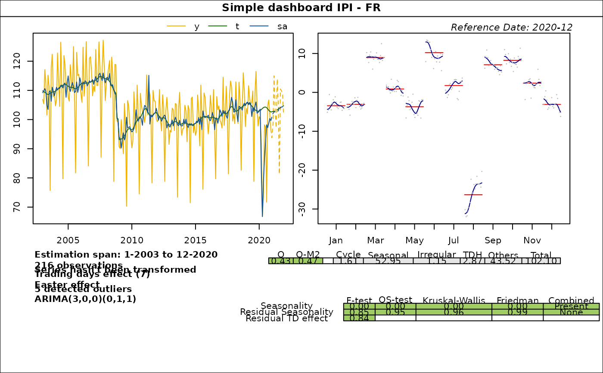
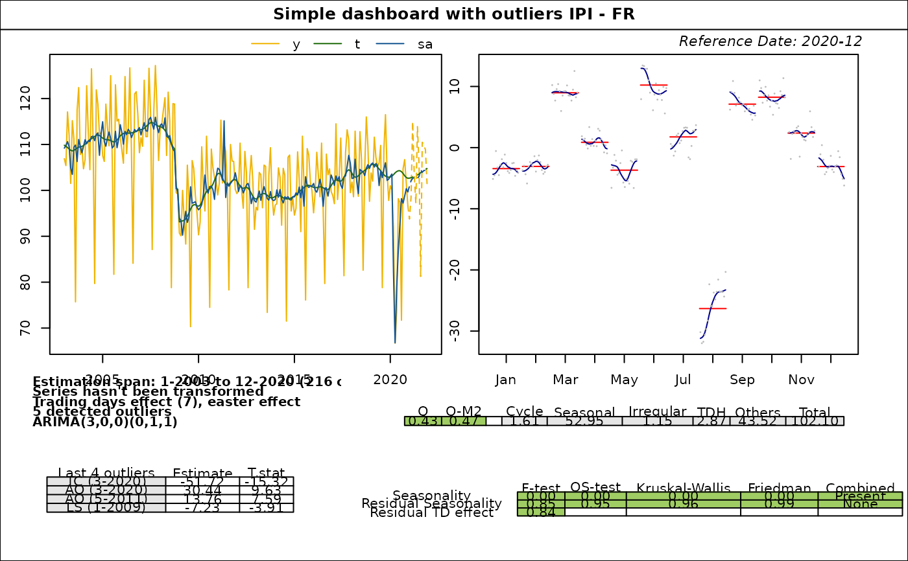

Functions to plot a simple dashboard of a seasonal adjustment model.
# S3 method for class 'simple_dashboard'
plot(
x,
main = "Simple Dashboard with outliers",
subtitle = NULL,
color_series = c(y = "#F0B400", t = "#1E6C0B", sa = "#155692"),
reference_date = TRUE,
...
)
Arguments
- x
a "sc_dashboard" object.
- main
main title.
- subtitle
subtitle.
- color_series
Color of the raw time series, the trend and the seasonally adjusted component.
- reference_date
boolean indicating if the reference date should be printed.
- ...
other parameters (unused).
Examples
data <- window(RJDemetra::ipi_c_eu[, "FR"], start = 2003)
sa_model <- RJDemetra::jx13(data, "RSA5c")
dashboard_data <- simple_dashboard(sa_model)
plot(dashboard_data, main = "Simple dashboard IPI - FR")

dashboard_data2 <- simple_dashboard2(sa_model)
plot(dashboard_data2, main = "Simple dashboard with outliers IPI - FR")
